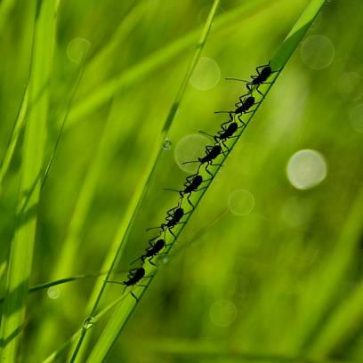

About Me

I graduated from the University of Dallas where I double majored in Business Leadership and Psychology. Since graduating, I've worked in Healthcare Consulting
I really enjoy the creativity, challenges, and collaboration that comes with coding, so I'm pursuing a full stack web development certification from SMU.
Longer term, I hope to use the experience gained through this program as a stepping stone in pursuing a CS Degree focusing on Data Science.
In my spare time, photography in particular has been a big passion of mine.
Although I do some commercial work, my main focus has been landscape photography and natural light portraiture.
I also enjoy spending reading, hiking, traveling, and spending time with family.